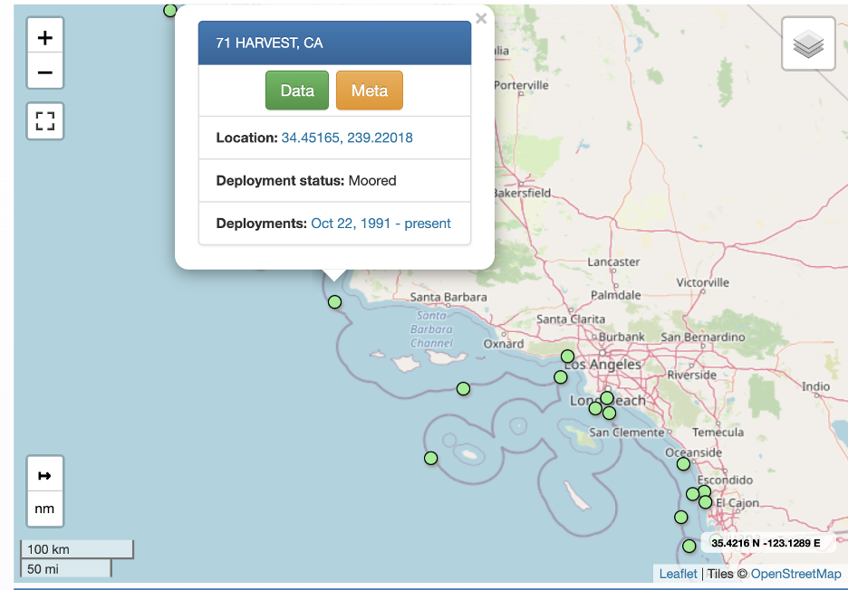
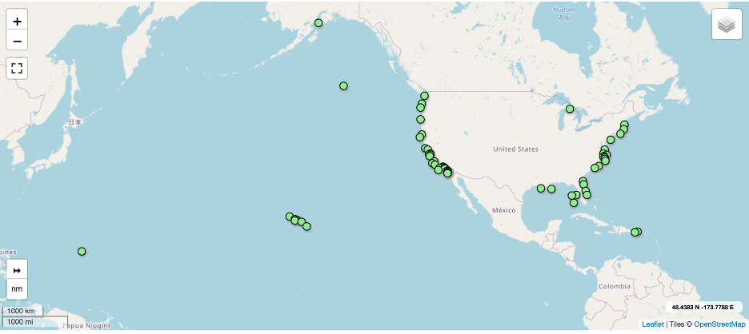
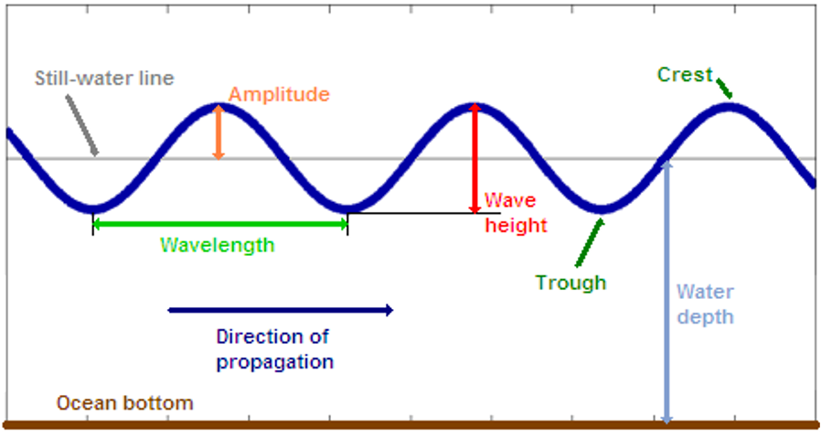

↑↑↑↑↑↑↑↑↑↑↑↑↑↑↑
Click the binder icon above to begin a code along tutorial. A remote python session will launch in your browser with the tutorial Be patient, sometimes it takes a while for the session to initialize the first few times.
HW3 Making Waves: CDIP Dataset Tutorial and Use Case Examples
View and evaluating wave height and temperature from the Coastal Data Information Program
EDS 220, Fall 2021
Authors
Cullen Molitor, UC Santa Barbara (cullen_molitor@bren.ucsb.edu) https://cullen-molitor.github.io/
Jake Eisaguirre, UC Santa Barbara (eisaguirre@bren.ucsb.edu) https://jake-eisaguirre.github.io/
Marie Rivers, UC Santa Barbara (mrivers@bren.ucsb.edu) https://marierivers.github.io/
Table of Contents
Notebook Purpose
This notebook was created to provide an introduction to NetCDF4 files and data from the Coastal Data Information Program (CDIP) at the Scripps Institute of Oceanography (SIO). This tutorial is based on a python API which loads netCDF files. We also provide methods for using sea surface temperature and swell height to compare correlations with El Nino/Southern Oscillation (ENSO) behavior at a specific location.
While these methods are applicable to other CDIP wave buoy stations, we chose the Harvest Buoy (CDIP site) to get information close to our local Santa Barbara, CA coast. The metadata is documented on the CDIP informational site.
We are also interested to see how the El Niño Southern Oscillation (ENSO) effects our local waters in Santa Barbara California. To do this, we use the primary measurement of the strength of ENSO, the Oceanic Niño Index, which calculates a monthly anomaly value for region 3.4 in the equatorial pacific. Region 3.4 was chosen as it is the first zone to indicate ENSO and commonly used in ENSO research.
 
Buoy Dataset Description
File format: NetCDF
Data retrieval source: CDIP portal and CDIP Python API
Operator: CDIP
Collaborators: CleanSeas
Funding: California Division of Boating and Waterways (CDBW) & US Army Corps of Engineer (USACE)
Data Availability: CDIP data and products are free available for public use
License: These data may be redistributed and used without restriction
Global coverage of stations:

Harvest buoy period of record: October 1991 - present
Measured wave parameters
Wave height is measured as the distance between the trough and the crest of a wave. Wave period measurements represent the time between two consecutive crests. Wave direction is the compass angle (0-360 degrees clockwise from true North) that the waves are coming from. Ocean waves never have just a single direction or period. Therefore, measurements of peak period (Tp) and peak direction (Dp) are reported. The peak period is the most common period between consecutive waves, and peak direction is the most common direction.
- Hs = wave height, 30-minute average of the ⅓ highest waves at a sensor
- Tp = peak period (most common period between consecutive waves)
- Dp = peak direction (most common direction)
CDIP documentation notes that statistical estimates of wave parameters have been developed by analyzing time-series measurements of a natural sea state. For example, significant wave height was designed to correspond to wave height estimates from experienced observer and is reported as the mean of the largest 1/3 (33%) of waves recorded during a sampling period. Ocean conditions constantly change and significant wave heights are statistical measures rather than measures corresponding to any specific wave. A given sampling period will have many waves smaller than Hs and some larger than Hs. Statistically, the largest wave in a 1,000 wave sample is likely to be ~1.8 times the reported significant wave height.

Equipment
CDIP uses Waverider (Mark III) directional buoys manufactured by Datawell that are equipped with accelerometers that measure wave height by recording the vertical acceleration of the buoy as it rises and falls with passing waves. Wave direction is recorded by horizontal accelerometers that measure north/south and east/west displacements. These buoys effectively measures waves with periods ranging from 1.6 to 30 seconds, with an error less than 3%. Temperature is measured by these buoys with a sensor is located approximately 18 inches below the watersurface. These buoys have a diameter of 0.9 meters. Available equipment documentation did not provide frequency of measurements.
Temporal notes
- Wave calcs use ~30 minute data samples
- Time assigned to the data is start time
- All data collected is archived by UTC time
Data Quality
- high quality publicly released data excludes all records flagged by quality control procedures
- activity log documents deployments, transmission problems, maintenance issues, and battery/power failures
Buoy Dataset Input/Output
Import required packages
import netCDF4
import numpy as np
import matplotlib.pyplot as plt
import datetime
import time
import calendar
import pandas as pd
from matplotlib import gridspec
from matplotlib import cm
import matplotlib as mplSet parameters
- names of any directories where data are stored
- ranges of years over which data are valid
- any thresholds or latitude/longitude ranges to be used later (e.g. dimensions of NINO3.4 region, threshold SSTA values for El Nino, etc.)
The harvest buoy, CDIP station number of 071, was selected for our regional analysis of the Santa Barbara Coast.
# Type
stn = '071'Read in the data
we use the netCDF4 module to read in the archived buoy data.
# CDIP Archived Dataset URL
data_url = 'http://thredds.cdip.ucsd.edu/thredds/dodsC/cdip/archive/' + stn + 'p1/' + stn + 'p1_historic.nc'data = netCDF4.Dataset(data_url)Metadata
The CDIP metadata includes general information about the Harvest buoy such as current status, location, instrument description and most recent measurement values. The metadata also includes the availability of parameters for each month that the station has been in operation. The code below further explores metadata associated with this dataset
The type function in Python was used to display the file type of the data
# return the file type
type(data)netCDF4._netCDF4.DatasetThe summary Python function was used to display summary text of the data
# return a summary of the dataset
data.summary'Directional wave and sea surface temperature measurements collected in situ by Datawell Waverider buoys located near HARVEST, CA from 1991/10/22 to 2019/06/17. This dataset includes publicly-released data only, excluding all records flagged bad by quality control procedures. A total of 372110 wave samples were analyzed for this area, where the water depth is approximately 183 to 549 meters.'The command .variables.keys() was used to return all variables included in the dataset.
# return all variables included in the dataset
print(data.variables.keys())dict_keys(['sourceFilename', 'waveTime', 'waveTimeBounds', 'waveFlagPrimary', 'waveFlagSecondary', 'waveHs', 'waveTp', 'waveTa', 'waveDp', 'wavePeakPSD', 'waveTz', 'waveSourceIndex', 'waveFrequency', 'waveFrequencyBounds', 'waveFrequencyFlagPrimary', 'waveFrequencyFlagSecondary', 'waveBandwidth', 'sstTime', 'sstTimeBounds', 'sstFlagPrimary', 'sstFlagSecondary', 'sstSeaSurfaceTemperature', 'sstSourceIndex', 'sstReferenceTemp', 'gpsTime', 'gpsTimeBounds', 'gpsStatusFlags', 'gpsLatitude', 'gpsLongitude', 'gpsSourceIndex', 'dwrTime', 'dwrTimeBounds', 'dwrSourceIndex', 'dwrBatteryLevel', 'dwrZAccelerometerOffset', 'dwrXAccelerometerOffset', 'dwrYAccelerometerOffset', 'dwrOrientation', 'dwrInclination', 'dwrBatteryWeeksOfLife', 'metaDeployLatitude', 'metaDeployLongitude', 'metaWaterDepth', 'metaDeclination', 'metaStationName', 'metaStationLatitude', 'metaStationLongitude', 'metaPlatform', 'metaInstrumentation', 'metaGridMapping', 'waveEnergyDensity', 'waveMeanDirection', 'waveA1Value', 'waveB1Value', 'waveA2Value', 'waveB2Value', 'waveCheckFactor', 'waveSpread', 'waveM2Value', 'waveN2Value'])The Harvest buoy collects data in the following categories:
- Significant Wave Height
- Swell Height
- Swell Period
- Swell Direction
- Wind Wave Height
- Wind Wave Period
- Wind Wave Direction
- Wave Steepness
- Average Wave Period
- Water Temperature
For this tutorial we are interested in:
- Significant Wave Height (
waveHs) - Sea Surface Temperature (
sstSeaSurfaceTemperature)
By using a print statement with the dataframe name and variable in brackets, you can view the long name, units, minimum values, and maximum values of a variable
# learn more about a variable including long name, units, valid min/max values
print(data['sstSeaSurfaceTemperature'])<class 'netCDF4._netCDF4.Variable'>
float32 sstSeaSurfaceTemperature(sstTime)
long_name: sea surface temperature
units: Celsius
_FillValue: -999.99
standard_name: sea_surface_temperature
coordinates: metaStationLatitude metaStationLongitude
grid_mapping: metaGridMapping
valid_min: -5.0
valid_max: 46.15
ancillary_variables: sstFlagPrimary sstFlagSecondary
ncei_name: SEA SURFACE TEMPERATURE
cell_methods: sstTime: point
unlimited dimensions:
current shape = (372015,)
filling off# Other Variables
# data.variables
# Hs = data.variables['waveHs']
# Tp = data.variables['waveTp']
# Dp = data.variables['waveDp'] Clean data
Thanks to the data processing methods used by CDIP, the downloaded datafiles did not require much actual cleaning. Since the sea surface temperature and wave height variables had different timestamps associated with each measurements we pulled out these variables for use in creating new dataframes that were used as an intermediate step in our overall analysis
# Get SST timestamp variable
sst_time_var = data.variables['sstTime']
# Get SST variable
sst = data.variables['sstSeaSurfaceTemperature'][:]
# Get wave height timestamp variable
wave_time_var = data.variables['waveTime']
# Get wave height variable
wave = data.variables['waveHs'][:]We used the cftime Python library for decoding time units and variable values in a netCDF file conforming to the Climate and Forecasting (CF) netCDF conventions.
First we created dataframes for the sea surface temperature sst_df and wave height wave_df data. We then aggregated this data by month and joined the dataframes to create one dataframe of buoy variables.
# Use num2date on sst_time_var
sst_time = netCDF4.num2date(sst_time_var[:], sst_time_var.units, only_use_cftime_datetimes=False)# Make an empty pandas dataframe
sst_df = pd.DataFrame()
# Fill it with SST and the date time it was collected
sst_df['sst'] = sst
sst_df['date_time'] = sst_timeThe code below creates columns for the date, month, and year of each observation timestamp. These values will later be used to calculate monthly means.
# Make date_time column a pandas date_time
sst_df['date_time'] = pd.to_datetime(sst_df['date_time'])
# Pull out date from datetime
sst_df['date'] = sst_df['date_time'].dt.date
# Pull out month from datetime
sst_df['month'] = sst_df['date_time'].dt.month
# Pull out year from datetime
sst_df['year'] = sst_df['date_time'].dt.year# Use num2date on wave_time_var
wave_time = netCDF4.num2date(wave_time_var[:], wave_time_var.units, only_use_cftime_datetimes=False)# Make an empty pandas dataframe
wave_df = pd.DataFrame()
# Fill it with SST and the date time it was collected
wave_df['wave'] = wave
wave_df['date_time'] = wave_time# Make date_time column a pandas date_time
wave_df['date_time'] = pd.to_datetime(wave_df['date_time'])
# Pull out date from datetime
wave_df['date'] = wave_df['date_time'].dt.date
# Pull out month from datetime
wave_df['month'] = wave_df['date_time'].dt.month
# Pull out year from datetime
wave_df['year'] = wave_df['date_time'].dt.yearThe next two code chunks let you view the newly created sea surface temperature and wave height dataframes
# Inspect data
sst_df.head()| sst | date_time | date | month | year | |
|---|---|---|---|---|---|
| 0 | 16.00 | 1991-10-22 08:21:00 | 1991-10-22 | 10 | 1991 |
| 1 | 16.00 | 1991-10-22 08:51:00 | 1991-10-22 | 10 | 1991 |
| 2 | 15.90 | 1991-10-22 09:21:00 | 1991-10-22 | 10 | 1991 |
| 3 | 15.90 | 1991-10-22 09:51:00 | 1991-10-22 | 10 | 1991 |
| 4 | 15.85 | 1991-10-22 10:21:00 | 1991-10-22 | 10 | 1991 |
wave_df.head()| wave | date_time | date | month | year | |
|---|---|---|---|---|---|
| 0 | 1.50 | 1991-10-22 07:52:00 | 1991-10-22 | 10 | 1991 |
| 1 | 1.48 | 1991-10-22 08:22:00 | 1991-10-22 | 10 | 1991 |
| 2 | 1.54 | 1991-10-22 08:52:00 | 1991-10-22 | 10 | 1991 |
| 3 | 1.56 | 1991-10-22 09:22:00 | 1991-10-22 | 10 | 1991 |
| 4 | 1.59 | 1991-10-22 09:52:00 | 1991-10-22 | 10 | 1991 |
ENSO Dataset
El Nino/Southern Oscillation (ENSO) data was obtained from the National Oceanic and Atmospheric Administration (NOAA) Climate Prediction Center. The code below goes through the steps to download and visualize this data then manipulate it to use in conjunction with the buoy dataset. We used Nino Region 3.4 for our analysis.
Read in ENSO data
ERSST5 Extended Reconstructed Sea Surface Temperature (SST) V5
Nino Regions

We use sep = '\s{2,}' because the data linked above is seperated by two or more spaces, not a comma or other typical delimiter.
path = "https://www.cpc.ncep.noaa.gov/data/indices/ersst5.nino.mth.91-20.ascii"
enso = pd.read_csv(path, sep = '\s{2,}', engine = 'python')
enso.head()| YR | MON | NINO1+2 | ANOM | NINO3 | ANOM.1 | NINO4 | ANOM.2 | NINO3.4 | ANOM.3 | |
|---|---|---|---|---|---|---|---|---|---|---|
| 0 | 1950 | 1 | 23.01 | -1.55 | 23.56 | -2.10 | 26.94 | -1.38 | 24.55 | -1.99 |
| 1 | 1950 | 2 | 24.32 | -1.78 | 24.89 | -1.52 | 26.67 | -1.53 | 25.06 | -1.69 |
| 2 | 1950 | 3 | 25.11 | -1.38 | 26.36 | -0.84 | 26.52 | -1.80 | 25.87 | -1.42 |
| 3 | 1950 | 4 | 23.63 | -1.90 | 26.44 | -1.14 | 26.90 | -1.73 | 26.28 | -1.54 |
| 4 | 1950 | 5 | 22.68 | -1.74 | 25.69 | -1.57 | 27.73 | -1.18 | 26.18 | -1.75 |
# drop unused columns from ENSO data
enso = enso.drop(enso.columns[[2, 3, 4, 5, 6, 7, 8]], axis=1)
# rename columns
enso = enso.rename(columns={"YR":"year", "MON":"month", "ANOM.3": "enso_anom"})
enso.head()| year | month | enso_anom | |
|---|---|---|---|
| 0 | 1950 | 1 | -1.99 |
| 1 | 1950 | 2 | -1.69 |
| 2 | 1950 | 3 | -1.42 |
| 3 | 1950 | 4 | -1.54 |
| 4 | 1950 | 5 | -1.75 |
Visualize data
Harvet buoy visualization
We started by visualizing the full dataset to inform our further analysis. Based on the data gaps shown in the plot, we decided to begin our analysis at 1997.
# Plot here to see what the data looks like
f, (pHs, pSst) = plt.subplots(2, 1, sharex=True, figsize=(15,10))
pSst.plot(sst_df.date, sst_df.sst, linewidth = 0.5)
pHs.plot(wave_df.date, wave_df.wave, linewidth = 0.5)
plt.title("Harvest Buoy", fontsize=30, y = 2.3)
pHs.set_ylabel('Wave Height, m', fontsize=18)
pSst.set_ylabel('SST, C', fontsize=18)Text(0, 0.5, 'SST, C')
ENSO anomaly visualization
The below plot shows the Oceanic Nino Index anaomaly vvalues from 1950 to the most current available data. The area under/over the curve to the x-axis is colored by the intensity of the anomaly. Anomaly values over 0.5°C for 5 consecutive 3 month seasonal averages are considered to be El Niño. Anomaly values under -0.5°C for 5 consecutive 3 month seasonal averages are considered to be La Niña.
Next we assign() an arbitrary day value of 1 in order to make a date with pd.to_datetime() function
enso = enso.assign(day = 1)
enso['date'] = pd.to_datetime(enso[['year', 'month', 'day']])# Choose color gradient here: https://matplotlib.org/stable/tutorials/colors/colormaps.html
colourmap = cm.get_cmap('magma')
xx = enso.date
yy = enso.enso_anom
plt.figure(figsize = (15, 5))
plt.plot(xx,yy, color = 'none')
normalize = mpl.colors.Normalize(vmin=yy.min(), vmax=yy.max())
npts = len(enso)
for i in range(npts - 1):
plt.fill_between([xx[i], xx[i+1]],
[yy[i], yy[i+1]],
color=colourmap(normalize(yy[i]))
,alpha=0.6)
plt.show()Use Cases Examples
Observational Data vs Modeled Data
The CDIP buoy network is a valuable resource for marine scientists, coastal managers, and mariners. The historic data (observational) is archived and is of great use for understanding past patterns and provides context for understanding the oceanographic conditions of our local ocean. Real time data (observational) gives an better idea of what to expect as wave energy moves past the buoy and towards our shoreline. It is also incredibly useful for mariners navigating these sometimes harsh and volatile waters. Forecasted data (modeled) is perhaps the most practical use case for mariners, as they not only need to know the current conditions but they need to know how those conditions are changing in order to navigate safely.
CDIP provide what they call ‘nowcasted’ data and ‘forecasted’ data. - Nowcasted provides insight at a higher resolution for the upcoming 6-hour period. These predictions tend to be more accurate and are generally fairly trustworthy. - Forecasted data provide a look further into the future, but with a greater amount of uncertainty
Our interest
We are interested in investigating the effect of El Niño on our local oceanographic conditions. We used linear regression models to plot and compare equatorial sea surface temperature anomalies with local Santa Barbara temperature and wave height. Typically temperature anomalies are calculated from a 30 year base period. Since we only had ~20 years of consistent data, we calculated monthly means since 1997 and used these as base values from which to compare monthly means for each year. The results of this analysis are useful to scientist, marine managers, marine conservation groups and coastal communities.
Other General Use Cases
- Modeling coastal erosion
- Investigating storm frequency and intensity over time
- Investigating changes in SST over time
- Detecting upwelling events
The code chunks below take the sea surface temperature and wave height dataframes created from the buoy data and group values by month and year so that monthly averages can be calculated. The two datasets are then grouped into a single buoy dataframe, buoy_df.
# Filter data to be greater than 1997 due to missing values before that time
sst_df = sst_df[sst_df['year'] > 1997]
wave_df = wave_df[wave_df['year'] > 1997]# Group by date and summarise with mean SST and Wave Height
sst_monthly = sst_df.groupby(['month', 'year']).agg({'sst': 'mean'})
wave_monthly = wave_df.groupby(['month', 'year']).agg({'wave': 'mean'})# Inspect Data
print(sst_monthly.head())
print(wave_monthly.head()) sst
month year
1 1999 13.194914
2000 13.023686
2001 13.454234
2002 12.896236
2003 14.313378
wave
month year
1 1999 2.467315
2000 2.126410
2001 2.971848
2002 2.609128
2003 2.432630# join monthly sst and wave data into a buoy dataframe
buoy_df = sst_monthly.join(wave_monthly)
buoy_df.head()| sst | wave | ||
|---|---|---|---|
| month | year | ||
| 1 | 1999 | 13.194914 | 2.467315 |
| 2000 | 13.023686 | 2.126410 | |
| 2001 | 13.454234 | 2.971848 | |
| 2002 | 12.896236 | 2.609128 | |
| 2003 | 14.313378 | 2.432630 |
Next we used reset_index to ungroup the buoy data
buoy_df = buoy_df.reset_index()
buoy_df.head()| month | year | sst | wave | |
|---|---|---|---|---|
| 0 | 1 | 1999 | 13.194914 | 2.467315 |
| 1 | 1 | 2000 | 13.023686 | 2.126410 |
| 2 | 1 | 2001 | 13.454234 | 2.971848 |
| 3 | 1 | 2002 | 12.896236 | 2.609128 |
| 4 | 1 | 2003 | 14.313378 | 2.432630 |
Here we calculate anomalies for buoy sea surface temperature and wave height values.
# calculate the anomalies
buoy_df = buoy_df.groupby(['month', 'year']).agg({'sst': 'mean', 'wave': 'mean'}) - \
buoy_df.groupby(['month']).agg({'sst': 'mean', 'wave': 'mean'})
buoy_df.head()
# since this line of code was so long, use used a `\` to break up the line. You can also split up lines at commas| sst | wave | ||
|---|---|---|---|
| month | year | ||
| 1 | 1999 | -0.458099 | -0.088380 |
| 2000 | -0.629327 | -0.429286 | |
| 2001 | -0.198779 | 0.416153 | |
| 2002 | -0.756777 | 0.053433 | |
| 2003 | 0.660365 | -0.123065 |
Note: You need to reset the index each time you group the data
buoy_df = buoy_df.reset_index()
buoy_df.head()| month | year | sst | wave | |
|---|---|---|---|---|
| 0 | 1 | 1999 | -0.458099 | -0.088380 |
| 1 | 1 | 2000 | -0.629327 | -0.429286 |
| 2 | 1 | 2001 | -0.198779 | 0.416153 |
| 3 | 1 | 2002 | -0.756777 | 0.053433 |
| 4 | 1 | 2003 | 0.660365 | -0.123065 |
# rename columns
buoy_df = buoy_df.rename(columns = {'sst':'buoy_sst_anom', 'wave':'buoy_wave_anom'})
# Assign arbitrary day value
buoy_df = buoy_df.assign(day = 1)
# set datetime
buoy_df['date'] = pd.to_datetime(buoy_df[['year', 'month', 'day']])
# sort values
buoy_df = buoy_df.sort_values(by=['date'])
# set the index for plotting
buoy_df = buoy_df.set_index('date')# Inspect
buoy_df.head()| month | year | buoy_sst_anom | buoy_wave_anom | day | |
|---|---|---|---|---|---|
| date | |||||
| 1998-03-01 | 3 | 1998 | 1.834283 | 0.105816 | 1 |
| 1998-04-01 | 4 | 1998 | 0.914924 | -0.130027 | 1 |
| 1998-05-01 | 5 | 1998 | 0.674051 | -0.090042 | 1 |
| 1998-06-01 | 6 | 1998 | 0.614153 | -0.300137 | 1 |
| 1998-07-01 | 7 | 1998 | 1.214789 | 0.132242 | 1 |
Joining enso and buoy data: Here we join the buoy dataframe and ENSO dataframe by date and create a basic plot of each anomaly.
buoy_df = buoy_df.drop(["month", "year", "day"], axis=1).reset_index()
enso = enso.drop(["year", "month", "day"], axis = 1)anom_df = buoy_df.set_index('date').join(enso.set_index('date')).reset_index()# Plot sst and wave height anomaly from buoy along with ENSO sst anomaly
f, (bwa, bsa, esa ) = plt.subplots(3, 1, sharex=True, figsize=(15,10))
bwa.plot(anom_df.date, anom_df.buoy_wave_anom)
bwa.fill_between(anom_df.date, anom_df.buoy_wave_anom, 0, alpha=0.30)
bwa.axhline(0,color='red')
bwa.set_ylabel('Buoy Wave Height Anomaly')
bsa.plot(anom_df.date, anom_df.buoy_sst_anom)
bsa.fill_between(anom_df.date, anom_df.buoy_sst_anom, 0, alpha=0.30)
bsa.axhline(0,color='red')
bsa.set_ylabel('Buoy SST Anomaly')
esa.plot(anom_df.date, anom_df.enso_anom)
esa.fill_between(anom_df.date, anom_df.enso_anom, 0, alpha=0.30)
esa.axhline(0,color='red')
esa.set_ylabel('ENSO Anomaly')Text(0, 0.5, 'ENSO Anomaly')
Model
We used the statsmodels package to develop linear regression models of the anomaly dataframes created in the sections above. We modeled anomalies for buoy sea surface temperature vs. ENSO sea surface temperature, buoy wave height vs. ENSO sea surface temperature, and buoy wave height vs. buoy sea surface temperature.
import statsmodels.api as smBuoy sea surface tempurature anomaly vs. ENSO sea surface temperature anomaly
# Simple linear model: buoy sst anomaly vs enso sst anomaly
model = sm.OLS(anom_df.buoy_sst_anom, anom_df.enso_anom)
# Model results
results = model.fit()
# Model summary
print(results.summary()) OLS Regression Results
=======================================================================================
Dep. Variable: buoy_sst_anom R-squared (uncentered): 0.282
Model: OLS Adj. R-squared (uncentered): 0.279
Method: Least Squares F-statistic: 98.58
Date: Tue, 07 Dec 2021 Prob (F-statistic): 8.24e-20
Time: 18:09:44 Log-Likelihood: -312.83
No. Observations: 252 AIC: 627.7
Df Residuals: 251 BIC: 631.2
Df Model: 1
Covariance Type: nonrobust
==============================================================================
coef std err t P>|t| [0.025 0.975]
------------------------------------------------------------------------------
enso_anom 0.5964 0.060 9.929 0.000 0.478 0.715
==============================================================================
Omnibus: 11.182 Durbin-Watson: 0.808
Prob(Omnibus): 0.004 Jarque-Bera (JB): 12.718
Skew: 0.402 Prob(JB): 0.00173
Kurtosis: 3.751 Cond. No. 1.00
==============================================================================
Notes:
[1] R² is computed without centering (uncentered) since the model does not contain a constant.
[2] Standard Errors assume that the covariance matrix of the errors is correctly specified.Buoy wave height anomaly vs. ENSO sea surface temperature anomaly
# Simple linear model: buoy wave anomaly vs enso sst anomaly
model = sm.OLS(anom_df.buoy_wave_anom, anom_df.enso_anom)
# Model results
results = model.fit()
# Model summary
print(results.summary()) OLS Regression Results
=======================================================================================
Dep. Variable: buoy_wave_anom R-squared (uncentered): 0.000
Model: OLS Adj. R-squared (uncentered): -0.004
Method: Least Squares F-statistic: 0.006389
Date: Tue, 07 Dec 2021 Prob (F-statistic): 0.936
Time: 18:09:44 Log-Likelihood: -11.128
No. Observations: 252 AIC: 24.26
Df Residuals: 251 BIC: 27.79
Df Model: 1
Covariance Type: nonrobust
==============================================================================
coef std err t P>|t| [0.025 0.975]
------------------------------------------------------------------------------
enso_anom 0.0015 0.018 0.080 0.936 -0.034 0.037
==============================================================================
Omnibus: 1.416 Durbin-Watson: 1.619
Prob(Omnibus): 0.493 Jarque-Bera (JB): 1.162
Skew: 0.011 Prob(JB): 0.559
Kurtosis: 3.332 Cond. No. 1.00
==============================================================================
Notes:
[1] R² is computed without centering (uncentered) since the model does not contain a constant.
[2] Standard Errors assume that the covariance matrix of the errors is correctly specified.Buoy wave height anomaly vs. buoy sea surface temperature anomaly
# Simple linear model: buoy wave anomaly vs buoy sst anomaly
model = sm.OLS(anom_df.buoy_wave_anom, anom_df.buoy_sst_anom)
# Model results
results = model.fit()
# Model summary
print(results.summary()) OLS Regression Results
=======================================================================================
Dep. Variable: buoy_wave_anom R-squared (uncentered): 0.035
Model: OLS Adj. R-squared (uncentered): 0.031
Method: Least Squares F-statistic: 9.167
Date: Tue, 07 Dec 2021 Prob (F-statistic): 0.00272
Time: 18:09:44 Log-Likelihood: -6.6118
No. Observations: 252 AIC: 15.22
Df Residuals: 251 BIC: 18.75
Df Model: 1
Covariance Type: nonrobust
=================================================================================
coef std err t P>|t| [0.025 0.975]
---------------------------------------------------------------------------------
buoy_sst_anom -0.0480 0.016 -3.028 0.003 -0.079 -0.017
==============================================================================
Omnibus: 2.296 Durbin-Watson: 1.645
Prob(Omnibus): 0.317 Jarque-Bera (JB): 2.133
Skew: 0.093 Prob(JB): 0.344
Kurtosis: 3.410 Cond. No. 1.00
==============================================================================
Notes:
[1] R² is computed without centering (uncentered) since the model does not contain a constant.
[2] Standard Errors assume that the covariance matrix of the errors is correctly specified.Visualize model results
m, b = np.polyfit(anom_df.enso_anom, anom_df.buoy_sst_anom, 1)
plt.figure(figsize = (10, 5))
plt.scatter(anom_df.enso_anom, anom_df.buoy_sst_anom)
plt.plot(anom_df.enso_anom, m * anom_df.enso_anom + b, color = 'red')
plt.title('Buoy SST Anomaly ~ ENSO SST Anomaly')
plt.ylabel('Buoy SST Anomaly')
plt.xlabel('ENSO SST Anomaly')Text(0.5, 0, 'ENSO SST Anomaly')
m, b = np.polyfit(anom_df.enso_anom, anom_df.buoy_wave_anom, 1)
plt.figure(figsize = (10, 5))
plt.scatter(anom_df.enso_anom, anom_df.buoy_wave_anom)
plt.plot(anom_df.enso_anom, m * anom_df.enso_anom + b, color = 'red')
plt.title('Buoy Wave Anomaly ~ ENSO SST Anomaly')
plt.ylabel('Buoy Wave Anomaly')
plt.xlabel('ENSO SST Anomaly')Text(0.5, 0, 'ENSO SST Anomaly')
m, b = np.polyfit(anom_df.buoy_sst_anom, anom_df.buoy_wave_anom, 1)
plt.figure(figsize = (10, 5))
plt.scatter(anom_df.buoy_sst_anom, anom_df.buoy_wave_anom)
plt.plot(anom_df.buoy_sst_anom, m * anom_df.buoy_sst_anom + b, color = 'red')
plt.title('Buoy Wave Anomaly ~ Buoy SST Anomaly')
plt.ylabel('Buoy Wave Anomaly')
plt.xlabel('Buoy SST Anomaly')Text(0.5, 0, 'Buoy SST Anomaly')
Results
Our model shows a positive correlation between ENSO sea surface temperature anomaly and Santa Barbara sea surface temperature anomaly. The model output indicates that this correlation is statistically significant based on the p-value, but the low \(R^2\) value of 0.282 estimates that temperature near the equator only accounts for approximately 28% of the variability in sea surface temperature near Santa Barbara.Buoy height wave anomaly only has a slight positive correlation with ENSO sea surface temperature anomaly, but these results were not statistically significant due to a p-value > 0.05. The model for buoy wave height vs. buoy sea surface temperature was statistically significant (p-value < 0.05, but based on the \(R^2\) value, buoy sea surface temperature anomaly accounts for only 3.5% of the variability observed in wave height..
Future Work
Further analyses with these datasets could look at correlations on a larger spatial scale by comparing results for other buoy stations closer to and further from the equator than Santa Barbara. The CDIP datasets can also be used to model the effect of ENSO on wave direction.
References
References used to create this tutorial include:
- Coastal Data Information Program (CDIP): https://cdip.ucsd.edu/
- Coastal Data Information Program (CDIP) data access documentation: https://cdip.ucsd.edu/m/documents/data_access.html
- Harvest bouy, station 071: https://cdip.ucsd.edu/m/products/?stn=071p1
Buoy Data citation: Data furnished by the Coastal Data Information Program (CDIP), Integrative Oceanography Division, operated by the Scripps Institution of Oceanography, under the sponsorship of the U.S. Army Corps of Engineers and the California Department of Parks and Recreation
ENSO Data citation: Data made publicly available by the National Weather Service’s Climate Prediction Center. The data used: Monthly ERSSTv5 (1991-2020 base period) Niño 3.4 (5°North-5°South)(170-120°West)